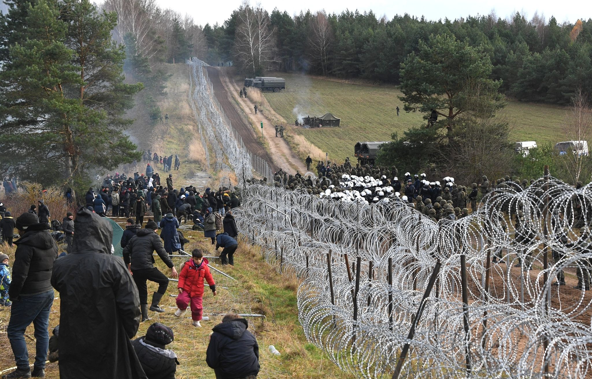
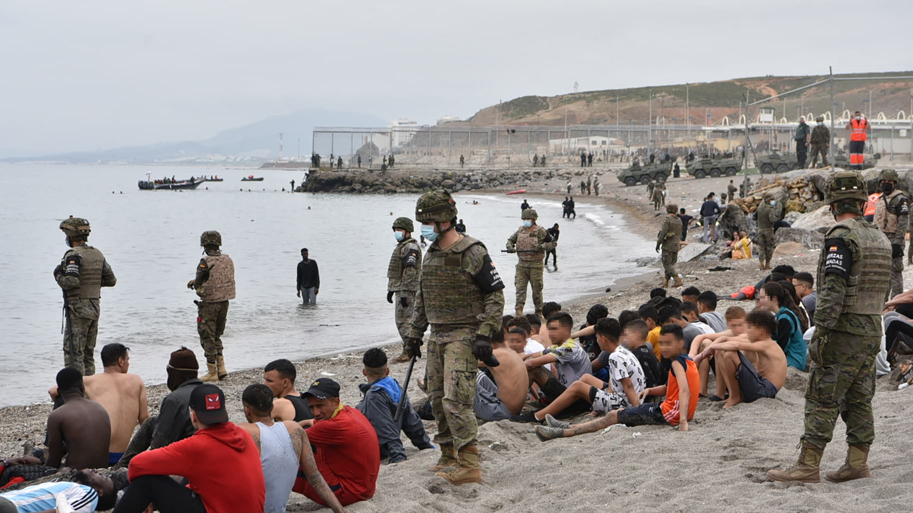

Les flux migratoires et migration mondiale au 21e siècle
Migration?



Histoire du passeport
- Lettre de sûreté (XVIᵉ – XVIIIᵉ s.) : autorisation de passage délivrée par un souverain local.
- Passeport moderne (premier modèle biométrique 2006, ICAO 2020) – QR‑code, puces NFC, empreintes.
Figure 1 : Du manuscrit à la puce biométrique (source : ICAO, 2020).

Frontières & État‑nation
- Traité de Westphalie (1648) : naissance du système d’État souverain.
- Zone Schengen (1995) : suppression des contrôles intérieurs, externalisation des frontières.
Figure 2 : États membres (bleu) et pays associés (vert).

Contrôle frontalier contemporain
- Frontex (EU) – 2023 : 1 200 agents, drones, IA de détection.
- Barrières physiques : mur USA‑Mexique (≈ 1 700 km), barrière Israël‑Palestine (≈ 700 km).
Figure 3 : Photo satellite du mur (source : USGS, 2022).

Corridors majeurs aujourd’hui (cartes interactives)
| Corridor | Origine | Destination | Volume 2022‑23 | Image illustrative |
|---|---|---|---|---|
| Afrique → Europe (Méditerranée) | Libye, Tunisie, Maroc | Italie, Grèce, Espagne | ≈ 2,1 M (arrivées totales)⁴ |  |
| Amérique latine → USA | Mexique, Guatemala, Honduras | États‑Unis (Californie, Texas) | ≈ 1,8 M (arrivées régulières + irrégulières)⁵ |  |
| Asie → Moyen‑Orient | Afghanistan, Pakistan, Iran | Turquie, Arabie Saoudite | ≈ 2,3 M (travailleurs temporaires)⁶ |  |
| Balkans | Grèce, Albanie | Allemagne, Suède | ≈ 800 k (flux 2022)⁷ |  |
| Afrique de l’Ouest → Canaries | Sénégal, Mauritanie | Îles Canaries (Espagne) | ≈ 70 k (2022)⁴ |  |
Sources : IOM DTM 2024 (corridors), UN DESA 2023 (stocks), Eurostat 2023 (flux intra‑UE).
Migration historique en carte

Évolution de la migration d’asile

Asile – routes et politiques européennes
- Procédure de Dublin (1990) : le premier État d’entrée est responsable.
- Accord UE‑Turquie (2020) : 40 % des arrivées en Grèce sont redirigées vers la Turquie.
- Statistiques de mortalité Méditerranée : 3 500 décès (2022) ; taux de mortalité + 12 % depuis 2015⁸.
Figure 4 : Décès par année (source : IOM Missing Migrants Project).

Mobilité « expat » vs migration : dépolitisée
- Expatriés hautement qualifiés (Tech, Finance) : 5,4 M personnes (2022) ; souvent exclues des débats publics⁹.
- Pourquoi ? : visas « premium », couverture médiatique limitée, perception d’« investissement » plutôt que de « déplacement ».
Figure 5 : Concentration d’expatriés (source : OECD 2022).

Migrations internes en Afrique
- Rural‑Urbain : + 30 % d’urbanisation (1990‑2020) ; 200 M déplacements internesⁱ⁰.
- Dynamiques climatiques : sécheresses du Sahel (2021‑2023) → 12 M déplacés internesⁱ¹.
Figure 6 : Croissance urbaine (World Bank, 2023).

Migration climatique – routes émergentes (2030‑2050)
- Sahel → Méditerranée (désertification, perte de terres agricoles) – projection : + 3 M de migrants climatiques d’ici 2050 (World Bank 2021)¹³.
- Bangladesh → Inde/Malaisie (élévation du niveau de la mer) – ≈ 1,5 M d’internes déplacés d’ici 2040 (IPCC 2022)¹⁴.
>
> Figure 7 : Scénario de migration climatique (source : IPCC 2022).

Alternatives de gouvernance – “Migration Managed Commons”
- Principe : ressources migratoires gérées comme un bien commun, partage des coûts et bénéfices entre États (Baldwin & Evenett 2020).
- Modèles pilotes :
- Accord Canada‑Mexique 2023 – quotas flexibles, mécanisme de redistribution des frais de réinstallation.
- Programme “Mobility Partnership” UE‑Afrique de l’Ouest (2022‑2025) – financement conjoint pour formation professionnelle et retour volontaire.
- Accord Canada‑Mexique 2023 – quotas flexibles, mécanisme de redistribution des frais de réinstallation.
Figure 8 : Schéma de gouvernance partagée (source : Baldwin & Evenett 2020).